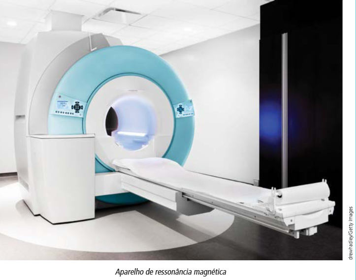
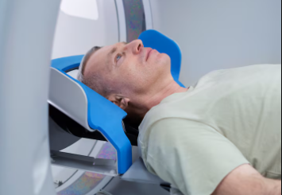
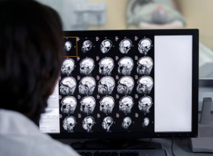

Diferença entre tomografia computadorizada e ressonância eletromagnética
Tomografia computadorizada
A tomografia computadorizada é uma espécie de raio-x que enxerga em 360 graus. Por isso, o exame gera imagens em fatias, que podem ser analisadas de qualquer ângulo.

Como é feita
O paciente se deita em uma maca que desliza pelo tomógrafo, um aparelho em formato de anel que contém uma fonte de raios X de um lado e um detector dessa radiação do outro.
Durante o exame, esse aparelho gira em torno do paciente enquanto emite feixes de raios X que atingem a região a ser estudada em vários ângulos. Parte dessa radiação é absorvida pelos tecidos de acordo com a sua densidade, enquanto a porção que atravessa o corpo é capturada pelo detector e convertida em imagens com diferentes intensidades de claro e escuro.
Para que serve
É usado para diagnosticar inúmeras doenças e pequenas alterações em vários setores do organismo humano. Por exemplo: a tomografia pode avaliar traumas cranianos ou, por causa dos seus resultados rápidos, ajudar a encontrar acidentes vasculares cerebrais nos prontos-socorros.
Além disso, o procedimento detecta tumores e processos infecciosos de diferentes órgãos. Sinais importantes de alerta, como hemorragias, aneurismas, perfuração de alças intestinais e até infartos também são detectados com o exame.
Ressonância eletromagnética
A ressonância magnética (RM) é um exame de imagem avançado, não invasivo, que permite ao médico visualizar com alta definição as estruturas internas do corpo, como ossos, músculos, órgãos e vasos sanguíneos, sem a necessidade de procedimentos cirúrgicos ou exposição à radiação.
Utilizando campos magnéticos e ondas de radiofrequência, a RM é essencial para o diagnóstico preciso de diversas doenças e lesões, sendo amplamente empregada em hospitais e centros de diagnóstico de referência.

Como é feita
O exame é realizado em um equipamento composto por uma maca deslizante que leva o paciente para dentro de um anel circular. Durante o procedimento, o paciente deve permanecer imóvel para garantir imagens nítidas. O aparelho utiliza ímãs para criar um campo magnético e ondas de rádio, gerando imagens detalhadas em diferentes planos do corpo. Antes do exame, é necessário remover todos os objetos metálicos, como joias e acessórios, devido ao campo magnético intenso.
Para que serve
Para investigar e acompanhar tumores e cânceres, lesões em articulações, ossos, músculos e ligamentos, alterações em órgãos internos, avaliação de vasos sanguíneos e anomalias vasculares, diagnóstico de doenças neurológicas e ortopédicas.